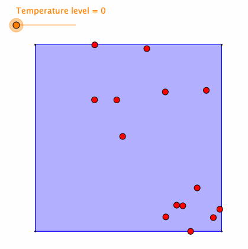
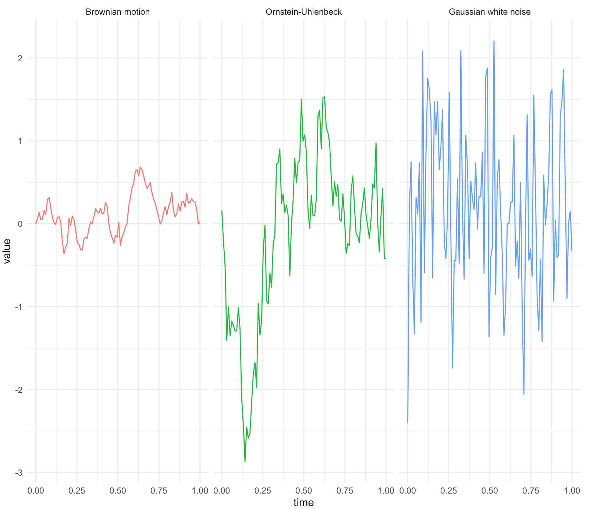
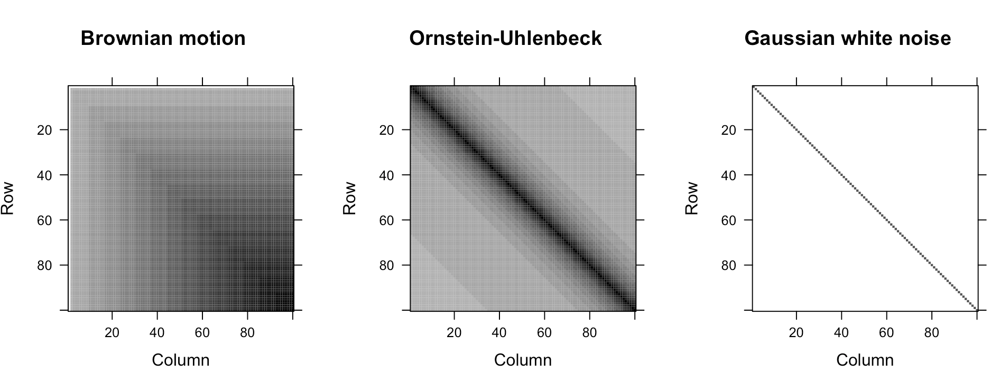

Plato, in his work the Republic, describes a cave in which the residents are chained to a wall so they can’t see the real world; the best they can perceive are shadows reflected on the wall of the cave by some light outside. The residents have to make up their own interpretations of the outside world according to these shadows. All residents lack the omniscient knowledge of the real world, so they perceive the world differently based upon what is going on inside their minds and their “mental” projections of the shadows. That’s to say, facing the same situation, different people may consciously react differently; the different actions consecutively create different life paths. An observer from outside may find the evolutions of these paths somehow random.
The randomness emerges when the residents construct various elaborate ideas towards what reality is. The variety of these elaborate “mental” projections breaks down the unitarity and generates random outcomes. Such a construction is called randomization, a process of endowing unpredictable patterns to the events.421 Randomization is particularly important in designing a game. Nobody wants to play a deterministic scissors-paper-stone game. This game is interesting because of the random feature - no one knows the opponent’s action. Similarly, suppose that many residents are characters immersing inside some kind of giant, massively “game platform” that is so well rendered that none of them can detect the artificiality; the way of keeping the game continue, I guess, is to create enough randomness to prevent awakening the players. (Although attributing few random events a “non-random” feature to some players would make the game more “addictive,” this trick is non-applicable to all the events and all the players.)
One way to think about randomization is to consider the physical process of heating the crystals. The cooling crystals of a solid locate statically on some perfect lattice. During the heating process, the free energy accumulates so that the solid begins to melt, and the previous static crystals start to move randomly.422 The inverse of this physical process, namely cooling down a melting solid, is called annealing.
Figure 16.1: Heating the crystals
In a technical sense, if we restrict our attention to some objects in a Hilbert space, \(\mathcal{H}\), we can define the randomization as mapping these objects into a Hilbert space associated with a certain probability space.
Here are three examples of the \(L_{2}(\Omega,\mathcal{F},\mathbb{P};\mathcal{H})\) space. First, suppose that the Hilbert space \(\mathcal{H}\) is just a real-valued vector space in the finite dimension, i.e., \(\mathcal{H}=\mathbb{R}^{n}\), the \(\mathcal{H}\)-valued random variables are standard random vectors, i.e., \[\begin{align*}\mathbf{\mathbf{X}}(\omega)=\left[\begin{array}{c} X_{1}(\omega)\\ \vdots\\ X_{n}(\omega) \end{array}\right]&,\: \mathbf{\mathbf{Y}}(\omega)=\left[\begin{array}{c} Y_{1}(\omega)\\ \vdots\\ Y_{n}(\omega) \end{array}\right],\\ \left\langle \mathbf{X}(\omega),\mathbf{Y}(\omega)\right\rangle _{\mathbb{P}}=&\mathbb{E}\left[\sum_{i=1}^{n}X_i(\omega)Y_i(\omega)\right],\end{align*}\] where the \(\mathbb{P}\)-inner product \(\left\langle \mathbf{X}(\omega),\mathbf{Y}(\omega)\right\rangle _{\mathbb{P}}\) can also be written as \[\left\langle \mathbf{X}(\omega),\mathbf{Y}(\omega)\right\rangle _{\mathbb{P}} = \int_{\mathbb{R}^{n}}\int_{\mathbb{R}^{n}}\langle \mathbf{x},\mathbf{y}\rangle p(\mathbf{x},\mathbf{y})\mbox{d}\mathbf{x}\mbox{d}\mathbf{y}=\int\int (\mathbf{x}^\top\mathbf{y} p(\mathbf{x},\mathbf{y}))\mbox{d}\mathbf{x}\mbox{d}\mathbf{y},\] where \(p(\cdot,\cdot)\) is the joint probability density function of \(\mathbf{x},\mathbf{y}\in\mathbb{R}^{n}\).424 If we assume that the set \(\Omega\) in the probability space \((\Omega, \mathcal{F}, \mathbf{P})\) only contains discrete states, the \(\mathbb{P}\)-inner product becomes \[\begin{align*}\left\langle \mathbf{X}(\omega),\mathbf{Y}(\omega)\right\rangle _{\mathbb{P}}&= \mathbb{E}[X(\omega)Y(\omega)]\\&=\sum_{i=1}^{n}x_{i}y_{i}p(x_{i},y_{i}).\end{align*}\]
Second, suppose that the Hilbert space \(\mathcal{H}\) is an infinite-dimensional space of real-valued functions on the domain \(t\in[0,T]\), i.e., \(\mathcal{H}=L_2[0,T]\), the \(\mathcal{H}\)-valued random variables are stochastic processes, i.e., \(X(t,\omega)\) and \(Y(t,\omega)\). Informally, we can think to extend the previous example to the infinite dimension.425 A stochastic processes \(X(t,\omega)\) can be thought of as a collection of infinite many random variables at infinite time points \(t_1, t_2,\dots\). So we have an infinite-length vector \(X_{t_1}(\omega),\dots X_{t_n}(\omega)\dots\). Also, the probability space of the \(L_{2}(\Omega,\mathcal{F},\mathbb{P};\mathcal{H})\)-space is a filtered space \((\Omega,\mathcal{F},\{\mathcal{F}_{t}\}_{t>0},\mathbb{P})\) where \(\mathcal{F}_1\) is for \(X_{t_1}\), etc. That is, given a fixed \(\omega\in\Omega\) (the sample path), the \(\mathcal{H}\)-valued \(\{X(\cdot,\omega):t\in[0,T]\}\) is a deterministic function, say \(X(\cdot,\omega):[0,t]\rightarrow L_{2}[0,T]\). The \(\mathbb{P}\)-inner product of these stochastic processes is given by \[\begin{align*}& \left\langle X(t,\omega),Y(t,\omega)\right\rangle _{\mathbb{P}}=\int\int X(s,\omega)Y(s,\omega)\mbox{d}s\mathbb{P}(\mbox{d}\omega)\\&=\mathbb{E}\left[\left\langle X(s,\omega),Y(s,\omega)\right\rangle \right]=\mathbb{E}\left[\int_{0}^{t}X(s,\omega)Y(s,\omega)\mbox{d}s\right].\end{align*}\]
Third, one fundamental subspace in \(L_{2}(\Omega,\mathcal{F},\mathbb{P};\mathcal{H})\)-space is Gaussian Hilbert space, a complete space consisting of zero-mean Gaussian random variables from the probability space \((\Omega,\mathcal{F},\mathcal{N})\) where \(\mathcal{N}\) stands for the Gaussian probability law. For example, for any \(n\) independent identical \(\varepsilon_i \sim \mathcal{N}(0,\sigma^2)\), the span of these Gaussian random variables \[\mbox{span}\left\{\sum_{i=1}^{n} c_i\varepsilon_i\,:\, \sum_{i=1}^nc_i^2\leq \infty\right\}\] is a Gaussian Hilbert space.
In the \(L_{2}(\Omega,\mathcal{F},\mathbb{P};\mathcal{H})\) space, we can formalize the randomness for infinite-dimensional objects. One example of randomization is to randomize the (deterministic) dynamics. Consider the following differential equation \[\frac{\mbox{d}x(t)}{\mbox{d}t} =f(x(t)), \,\, \mbox{with } x(0) =x_{0}.\] We know that the solution of the system (if it exists) \(x(t)\in\mathcal{H}\) must be a function \(x(\cdot):[0,T]\rightarrow\mathbb{R}\).426 Suppose the function \(f(\cdot)\) is Lipschitz continuous; the solution exists and is unique. Randomization is to parameterize the function \(f(\cdot)\) by a random variable \(\varepsilon_{t}\) at time \(t\) (with \(\mathbb{E}[|\varepsilon_t|^2]\leq0\)). The system then becomes \[ \frac{\mbox{d}X(t,\omega)}{\mbox{d}t} =f\left(X(t,\omega),\varepsilon_t\right),\,\, \mbox{with } X(0,\omega) =x_{0},\] whose solution (if it exists) is a stochastic process \[X(\cdot,\cdot):[0,T]\times(\Omega,\mathcal{F},\{\mathcal{F}_{t}\}_{t\in[0,T]},\mathbb{P})\rightarrow\mathbb{R}.\] Given \(\omega\), the deterministic function \(X(\cdot,\omega)\) is an \(\mathcal{H}\)-valued element.
The above differentiation notation of the stochastic process \(X(t,\omega)\) may look awkward as the stochastic processes often have zigzags and we have seen the “non-differentiability” natural of zigzags (see chapter 7.2). The fact is that the differentiation \(\mbox{d}X(t,\omega)/\mbox{d}t\) refers to a “differentiation” in the mean square sense. For the \(L_{2}(\Omega,\mathcal{F},\mathbb{P};\mathcal{H})\) space processes, we can introduce this new differentiation by some standard calculus conditions on the means and the covariances.
Notice that for a \(L_{2}(\Omega,\mathcal{F},\mathbb{P};\mathcal{H})\)-space stochastic process, the first- and second-order densities (if they exist) can answer most (if not all) important probabilistic questions about the process. In other words, all the probability laws of the process are given by the first- and second-order densities. So it would be quite straightforward to consider the parameters associated with these densities, namely the means and the covariance.
One can define an equivalence class of stochastic processes having prescribed first and second-order moments. This class is normally labeled as the second-order process.
Let \(\{X(t,\omega)\}_{t\in\mathbb{R}^{+}}\) be a stochastic process and let \(\{X_t(\omega)\}_{t\in\mathbb{N}}\) be a time series.
Consider the AR(1) model \(X_{t+1}=\phi X_{t}+\varepsilon_{t}\) where \(\varepsilon_{t}\sim\mathcal{N}(0,\sigma_{\epsilon}^{2})\) is independent of \(X_t\). The mean and covariance functions follow the following dynamic law:427 The law comes from
\[\begin{align*}
\mu_{X}(t+1)&=\mathbb{E}[X_{t+1}]\\&=\mathbb{E}[\phi X_{t}+\varepsilon_{t}]\\
&=\phi\mu_{X}(t)\\
\mbox{Cov}_{X}(t+1,t) &=\mbox{Cov}(X_{t+1},X_{t})\\
&=\mbox{Cov}(\phi X_{t}+\epsilon_{t},X_{t})
\\&=\phi\mbox{Cov}(X_{t},X_{t})+\mbox{Cov}(\epsilon_{t},X_{t})
\\&=\phi\mbox{Cov}_{X}(t,t)\end{align*}\]
Sometimes people are interested in AR models with invariant variances, namely \[\mbox{Var}(X_t(\omega))=\cdots=\mbox{Var}(X_1(\omega))=\sigma^2.\]
Then there is
\[\sigma^{2} = \phi^{2} \sigma^{2} + \sigma_{\epsilon}^{2}\] which implies \(\sigma=\sigma_{\epsilon}^{2}/(1-\phi)\). Thus the covariance function of this AR(1) model can be simplified into \[\mbox{Cov}_{X}(t+1,t)=\frac{\sigma_{\epsilon}^{2}\phi}{1-\phi}.\]
\[\mu_{X}(t+1)=\phi\mu_{X}(t),\,\,\mbox{Cov}_{X}(t+1,t)=\phi\mbox{Cov}_{X}(t,t).\]
One essential sub-class of the second-order processes is the Gaussian process, whose probability law is uniquely determined by the following specification \[X(\cdot,\omega)\sim \mathcal{N}(\mu_X(\cdot),\mbox{Cov}_X(\cdot,\cdot)).\] To understand the above specification, let’s consider a real-valued random vector \(\mathbf{X}(\omega)\in\mathbb{R}^{n}\) with Gaussian distribution \(\mathbf{X}(\omega)\sim \mathcal{N}(\mathbf{\mu},\Sigma)\). The first-order information is given by the mean vector \(\mathbb{E}[\mathbf{X}(\omega)]=\mathbf{\mu}\); the finite second-order information is contained in the covariance matrix \(\mbox{Var}(\mathbf{X}(\omega))=\Sigma\). For a Gaussian process \(X(t,\omega)\in\mathbb{R}\) with mean function \(\mu_X(\cdot)\) and \(\mbox{Cov}_X(\cdot,\cdot)\), if we visualize the process at any \(n\) time points \((t_1,\dots,t_n)\), the process looks like a random vector of the time series \(X_{t_1}(\omega),\dots,X_{t_n}(\omega)\): \[\underset{\mathbf{X}(\omega)}{\underbrace{\left[\begin{array}{c} X(t_{1},\omega)\\ \vdots\\ X(t_{n},\omega) \end{array}\right]}}\sim\mathcal{N}\left(\underset{\mathbf{\mu}}{\underbrace{\left[\begin{array}{c} \mu_{X}(t_{1})\\ \vdots\\ \mu_{X}(t_{n}) \end{array}\right]}},\underset{\Sigma}{\underbrace{\left[\begin{array}{ccc} \mbox{Cov}_{X}(t_{1},t_{1}) & \cdots & \mbox{Cov}_{X}(t_{1},t_{n})\\ \vdots & \ddots & \vdots\\ \mbox{Cov}_{X}(t_{n},t_{1}) & \cdots & \mbox{Cov}_{X}(t_{n},t_{n}) \end{array}\right]}}\right).\] For the Gaussian process, by letting \(n\) go to infinity, the above result is supposed to hold and it can be expressed as \(X(\cdot,\omega)\sim \mathcal{N}(\mu_X(\cdot),\mbox{Cov}_X(\cdot,\cdot))\).
The above discretization of a continuous time Gaussian process has one interesting implication. Some positive (semi)-definite matrices (the covariance matrices) may have their corresponding underlying functions. Moreover, these functions may also have corresponding underlying operators (the functions’ infinite-dimensional counterparts). In practice, the discretized Gaussian process’s covariance matrices come from some “kernels” or called positive operators. We will come back to these concepts in sec[?].
Figure 16.2: Gaussian processes with zero mean
Figure 16.3: The corresponding covariance matrces
Simulation of Gaussian processes
Now, we come back to the discussion of the differentiation issue for the stochastic process \(X(t,\omega)\). The issue is resolvable with defining a meaningful calculus towards the randomness.
Let’s discretize the stochastic process \(X(t,\omega)\) into a stochastic sequence \(\{X_{t}(\omega)\}_{t\in\mathbb{N}}\). The following definition gives the mean square calculus for such a sequence.
Mean square continuity: When \[\lim_{h\rightarrow0}\mathbb{E}\left[\left|X_{t+h}(\omega)-X_{t}(\omega)\right|^{2}\right]=0,\] the random variable \(X_{t+h}(\omega)\) is mean square continous at \(t\).
Mean square differentiability : When the second order derivative \[\frac{\partial^{2}\mathbb{E}[X_{t}(\omega)X_{s}(\omega)]}{\partial t\partial s}\] exists for any \(t,s \in [a,b]\), \(X_{t}(\omega)\) is mean square differentiable such that \[\lim_{h\rightarrow0}\mathbb{E}\left[\left|\frac{X_{t+h}-X_{t}}{h}-\frac{\mbox{d}X_{t}}{\mbox{d}t}\right|^{2}\right]=0.\]
Mean square integrability : When \(\mathbb{E}[X_{t}(\omega)X_{s}(\omega)]\) is (Riemann) integrable for \(t\in[a,b]\), \(X_{t(\omega)}\) is mean square integrable over \([a,b]\) with the mean square integral \(\int_{t\in[a,b]} X_{t}(\omega) \mbox{d}t\).428 Here is a more formal definition of the mean square integral. For an interval \([a,b]\), we make a partition \(a=t_{0}<t_{1}<\cdots<t_{n}=b\) and let \(\kappa=\max_{i}(t_{i+1}-t_{i})\), \(t_{i}\leq m_{i}\leq t_{i+1}\). The mean square integral of \(X_{t}(\omega)\) is given by the mean square limit of \(\sum_{i=0}^{n-1}X_{m_{i}}(\omega)(t_{i+1}-t_{i})\) that is \[\begin{align*}\lim_{\kappa\rightarrow0, n\rightarrow\infty}\mathbb{E}\left[\left|\sum_{i=0}^{n-1}X_{m_{i}}(\omega)(t_{i+1}-t_{i})-\\ \int_{a}^{b}X(t,\omega)\mbox{d}t\right|^{2}\right]=0.\end{align*}\]
Fundamental theorem of mean square calculus :\[\Pr\left\{ \left|X_{t}(\omega)-X_{a}(\omega)=\int_{a}^{t}\left(\frac{\mbox{d}X_{\tau}(\omega)}{\mbox{d}\tau}\right)\mbox{d}\tau\right|\right\} =1.\]
The term \(\mathbb{E}[X_{t}(\omega)X_{s}(\omega)]\) connects to the mean square criterion: \[\begin{align*}\mathbb{E}\left[\left|X_{t+h}-X_{t}\right|^{2}\right]&=\mathbb{E}\left[X_{t+h}X_{t+h}\right]-\mathbb{E}\left[X_{t+h}X_{t}\right]\\ &-\mathbb{E}\left[X_{t}X_{t+h}\right]+\mathbb{E}\left[X_{t}X_{t}\right].\end{align*}\] That is to say, mean square continuity is all about continuity of \(\mathbb{E}[X_{t}(\omega)X_{s}(\omega)]\) for any \(t,s\). Besides, mean square differentiability and integrability relate to the calculus of \(\mathbb{E}[X_{t}(\omega)X_{s}(\omega)]\).429 To have a vague idea about this relationship, recall that the definitions of differentiation and integration are both based on the continuity of some criteria of infinitesimal changes. Thus, the mean square differentiability and integrability must be based on the continuity of some mean square criteria of infinitesimal changes. As these mean square criteria all relate to the terms of \(\mathbb{E}[X_{t}(\omega)X_{s}(\omega)]\), we can see that the essence of defining mean square differentiability and integrability is to define the differentiability and integrability of \(\mathbb{E}[X_{t}(\omega)X_{s}(\omega)]\) for any \(t,s\). By the equality \[\mathbb{E}[X_t(\omega)X_s(\omega)]=\mbox{Cov}_X (t,s)+\mu_{X}(t)\mu_{X}(s),\] one can induce that the mean square continuity, differentiability, and integrability actually relate to the continuity and the calculus of mean and covariance functions.
Some remark about the mean square criterion
We can define a baseline of modeling unpredictable fluctuation in the second-order processes called the white noise with the mean square calculus. (See figure 16.2.)
Let \(\varepsilon(t,\omega)\) denote the white noise. The process has zero mean function and its covariance function is \[\mbox{Cov}_{\varepsilon}(t,s)=\sigma^{2}\delta(t-s)\] where \(\delta(\cdot)\) is called the delta function such that \[\begin{align*}\delta(x)=\begin{cases} \infty, & x=0,\\ 0, & x\neq0, \end{cases} & \; \mbox{ and }\\ \int_{-\infty}^{\infty}\delta(x)\mbox{d}x=1,& \,\, \int_{-\infty}^{\infty}f(x)\delta(x)\mbox{d}x=f(0) \end{align*}\] for any continuous function \(f(\cdot)\). Basically, a delta function is an infinite “spike” above a single point.430 One can shift the origin to any point \(t\) by setting the argument to \(x-t\) such that \[\delta(x-t)=\begin{cases} \infty, & x=t,\\ 0, & x\neq t. \end{cases}\] The delta function can be thought of as the derivative of the step function \(\mathbf{1}_{\{x>0\}}(x)\) that has zero everywhere and goes to infinity at \(0\).431 Note that for any \(\epsilon>0\), the derivative of the step function is \[\begin{align*} &\lim_{\epsilon\rightarrow0}\frac{\mathbf{1}_{\{x>0\}}(x+\epsilon)-\mathbf{1}_{\{x>0\}}(x)}{\epsilon}=\\ &\begin{cases} \lim_{\epsilon\rightarrow0}\frac{1}{\epsilon}\rightarrow\infty & x=0\\ \lim_{\epsilon\rightarrow0}\frac{0}{\epsilon}\rightarrow 0 & x\neq 0 \end{cases}.\end{align*}\]
In addition, if the probability law in the \(L_{2}(\Omega,\mathcal{F},\mathbb{P};\mathcal{H})\)-space is Gaussian, then the white noise is called Gaussian white noise,432 Notice that the inner product \(\langle f,\delta \rangle=f(0)\) is well-defined. So the delta function is somehow similar to the indicator function at the origin as \[\int_{-\infty}^{\infty}f(x)\mathbf{1}_{\{x=0\}}(x)\mbox{d}x=f(0).\] In practice, one implements \(\mathbf{1}_{\{x=t\}}(x)\) instead of \(\delta(x-t)\) as a (numerical) delta function, because the infinite value of the delta function is impossible for the implementation. \[\varepsilon(t,\omega)\sim\mathcal{N}(0,\sigma^{2}\delta(x-t)).\]
The Gaussian white noise \(\varepsilon(t,\omega)\) corresponds to the “derivative” of a Brownian motion \(X(t,\omega)\): \[\varepsilon(t,\omega)=\frac{\mbox{d}X(t)}{\mbox{d}t}.\] Because the covariance function of the Brownian motion is433 The discretization of the covariance functions of Brownian motion and white noise can be found in figure 16.3. \(\mbox{Cov}_{X}(t,s)=\sigma^{2}\min(t,s)\), its second derivative gives the white noise’s one434 Note that\[\min(t,s)=\begin{cases} s, & s<t\\ t, & s>t \end{cases},\\ \frac{\partial\min(t,s)}{\partial t}=\mathbf{1}_{\{s>t\}}(s)=\begin{cases} 0, & s<t\\ 1, & s>t \end{cases}.\] That is, the first derivative of \(\min(t,s)\) is the step function \(\mathbf{1}_{\{s>t\}}(s)\). As we know, the derivative of a step function is the delta function. The result follows. \[\mbox{Cov}_{\varepsilon}(t,s)=\frac{\partial^{2}\mbox{Cov}_{B}(t,s)}{\partial t\partial s}=\sigma^{2}\frac{\partial^{2}\min(t,s)}{\partial t\partial s}=\sigma^{2}\delta(t-s).\] That is, the mean square differentiation of Brownian motion is a white noise.
By the fundamental theorem of mean square calculus, we have \[\int_{s}^{t}\varepsilon(\tau,\omega)\mbox{d}\tau=X(t,\omega)-X(s,\omega)\mbox{ with probability }1,\] where \(X(t,\omega)-X(s,\omega)\) is also called the increment of Brownian motion. The covariance function of \(\int_{s}^{t}\varepsilon(\tau,\omega)\mbox{d}\tau\) is \(t-s\), so the increment of Brownian motion \(X(t,\omega)-X(s,\omega)\) follows the probability law \(\mathcal{N}(0,t-s)\).435 To understand this statement, we should know that Brownian motion is a mathematically tractable version of the idea of the random walk in the continuous time setting. Intuitively, one can think of random walks \(X_{s}=\varepsilon_{1}+\cdots+\varepsilon_{s}\) and \(X_{t}=\varepsilon_{1}+\cdots+\varepsilon_{t}\). Then \[X_{t}-X_{s}=\underset{(t-s)-\mbox{entities}}{\underbrace{\varepsilon_{t}+\varepsilon_{t-1}+\cdots+\varepsilon_{s}}}.\] For each \(\varepsilon_{i}\sim\mathcal{N}(0,\sigma^{2})\), the Gaussian property tells that \[\sum_{i=s}^{t}\varepsilon_{i}\sim\mathcal{N}(0,(t-s)\sigma^{2}).\]
Page built: 2021-02-28